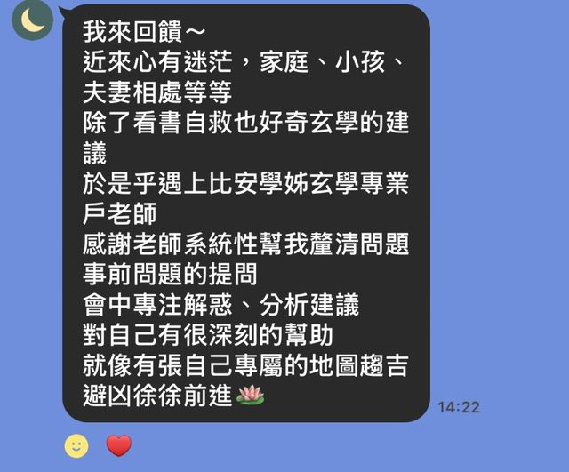
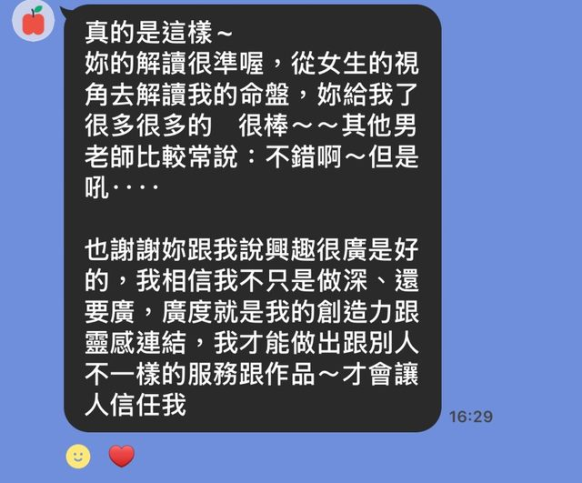
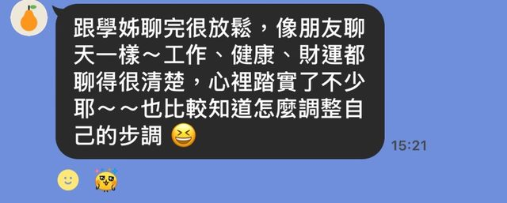
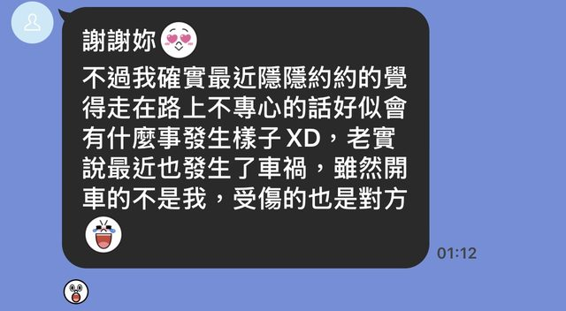
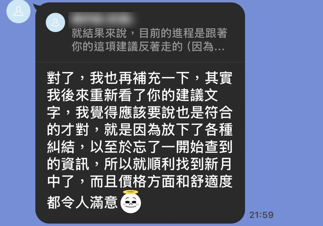

適合正在這些時刻的你
- 站在轉職、創業或進修的十字路口
- 感情與人際關係反覆卡在相似的地方
- 想了解自己的天賦與適合的工作型態
- 想知道今年的節奏，提前做好準備
- 想釐清金錢價值觀，提前布局規畫
諮詢方案
每次諮詢前，我會花 1～2 天細讀你的命盤和問題
我看盤不算快，但每一張都很認真看
因為我真心想幫每位來找我的夥伴，解開心裡的卡關
諮詢後會提供我親手整理的重點紀錄，不是 AI 產的
你不用自己做筆記，專心聊就好
諮詢過的人這樣說
每一則都是諮詢後收到的真實回饋，經同意後分享
「就像有張自己專屬的地圖，趨吉避凶，徐徐前進」近來心有迷茫，家庭、小孩、夫妻相處等等，除了看書自救，也好奇玄學的建議。感謝老師系統性地幫我釐清問題，從事前的提問，到會中專注解惑、分析建議，對自己有很深刻的幫助，就像有張自己專屬的地圖，趨吉避凶，徐徐前進
看原始回饋截圖

「廣度就是我的創造力跟靈感連結」妳的解讀很準喔，從女生的視角去解讀我的命盤，給了我很多很多的「很棒」。也謝謝妳跟我說興趣很廣是好的，我相信我不只是做深、還要廣，廣度就是我的創造力跟靈感連結，我才能做出跟別人不一樣的服務跟作品
看原始回饋截圖

「像朋友聊天一樣，心裡踏實了不少」跟學姊聊完很放鬆，像朋友聊天一樣～工作、健康、財運都聊得很清楚，心裡踏實了不少，也比較知道怎麼調整自己的步調
看原始回饋截圖

「放下了各種糾結，就順利找到了」後來重新看了妳的建議文字，覺得也是符合的。就是因為放下了各種糾結，就順利找到新的月子中心了，而且價格和舒適度都令人滿意
看原始回饋截圖


諮詢流程
選擇服務與時段
可在LINE上預約服務與日期時段
確認時間與付款
完成付款即保留預約時段
填寫資料
提供出生資料與想了解的問題
諮詢與交付
諮詢當天給你重點摘要，陪你把洞察變成行動
常見問題
一對一諮詢跟文字版諮詢有什麼差別？
一對一諮詢是 90 分鐘對談，適合需要來回討論的複雜問題
文字版諮詢是聚焦一個問題，5工作日內以 Email／LINE 提供書面分析，適合想保留內容反覆閱讀的人
不知道準確的出生時間怎麼辦？
排盤需要精確的出生年、月、日、時，如果不確定可至戶政事務所查閱（台灣地區）
我的生辰和諮詢過程中的問題會保密嗎？
你的生辰資料和諮詢過程中的所有事情都會保密，不會對外分享或公開。
紫微斗數命盤可以討論哪些主題？
只要和你的人生有關，大多都可以討論，不管是
人生方向與目標
工作機會與職涯規劃
事業發展與創業
財務與金錢觀
感情與人際關係
健康與風險提醒
最近卡關、不知道怎麼選擇的事情
紫微斗數都可以從不同角度切入，幫你整理目前的狀況與可能的選擇
如果臨時有事，可以改期嗎？
請於諮詢日前 3 天告知，我們會一起安排新的時間
若當天臨時遲到或未事先通知缺席，等待 15 分鐘後將視同取消，恕無法退費
每個預約時段，都代表有人願意把時間留給自己的生命課題，我也希望公平尊重每一位來諮詢的人
什麼問題不適合來問？
不詢問生死相關議題，以及無法取代醫療診斷，健康疑慮請務必尋求專業醫生建議，紫微斗數僅提供健康與意外風險提醒